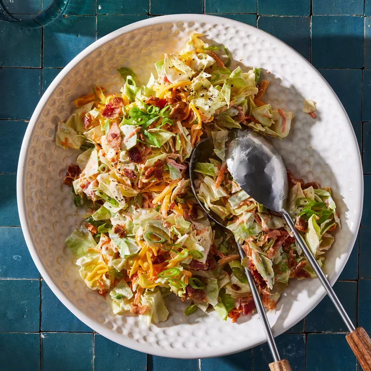

This Loaded Cabbage Salad Is a Side Dish You'll Make All Summer Long
This loaded cabbage salad features crisp chopped green cabbage tossed in a creamy dressing flavored with smoky bacon. We use bacon fat from the skillet to pump up the savory flavor in the dressing, but you can swap it out for oil if you prefer. While green cabbage holds up well in chopped salads, red cabbage or even napa cabbage can be used in its place.
